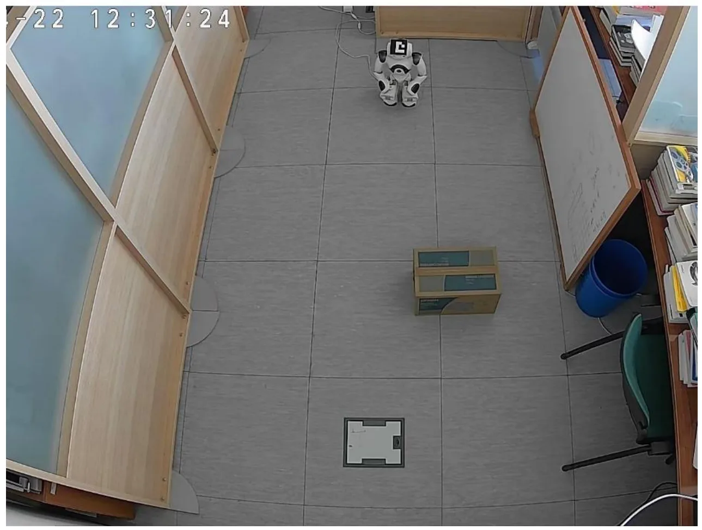

动态本体语义映射混合管线A hybrid pipeline for dynamic ontology-based semantic mapping
A 级推荐；已查阅官方 arXiv HTML/PDF 与实验章节。
一句话工作总结
这是从几何定位到空间推理的桥接候选，但当前证据来自 PDF 正文，缺少官方 HTML 和完整量化实验，因此详情页保持待核验。
半海报（待补全）
当前记录尚未达到完整海报质量门槛，暂不把摘要或评分理由冒充方法/实验结论。
待补字段：研究上下文.network（至少 2 条实质条目）。下一次任务需从论文全文或官方 HTML 提取证据后再发布。
摘要
论文提出外部标定相机、homography 几何定位、目标检测、持久跟踪和 ontology-driven semantic update 的混合系统。它持续更新对象实例、空间属性和语义关系，形成动态 semantic world model。
Semantic mapping plays a crucial role in the ability of a robot to interact with objects, operate and navigate a complex environment. The most common pipeline for semantic mapping consists of geometric mapping and localization (SLAM), perception, semantic fusion and semantic representation. However, more recent works also integrate a form of prior knowledge in their application, most notably knowledge graphs or semantic scene graphs, to improve contextual understanding of the environment. In this paper, we present a hybrid pipeline for semantic mapping. Our system incorporates an external calibrated camera using homography projection for geometric mapping and localization, combined with object detection, persistent object tracking and ontology driven semantic updates to build a dynamic semantic world model. Linear regression models are also used for correction of the estimated values of real world coordinates. The system continuously updates object instances, spatial properties and semantic relations based on real time sensory data. Ontologies are selected as form of knowledge representation due to their hierarchical structure, semantic expressiveness and support for dynamic world modelling.
中文解读摘录
图表/页面预览

{kind=link}
